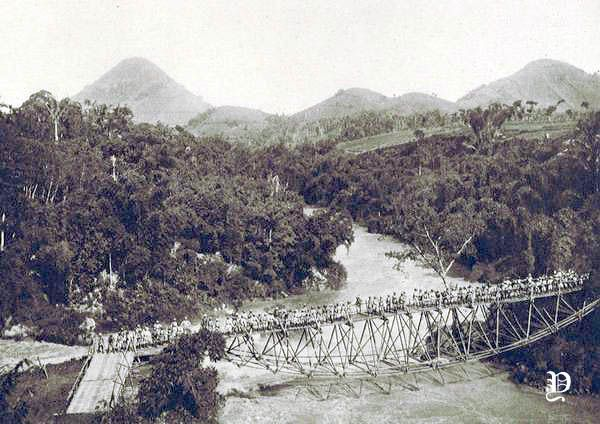
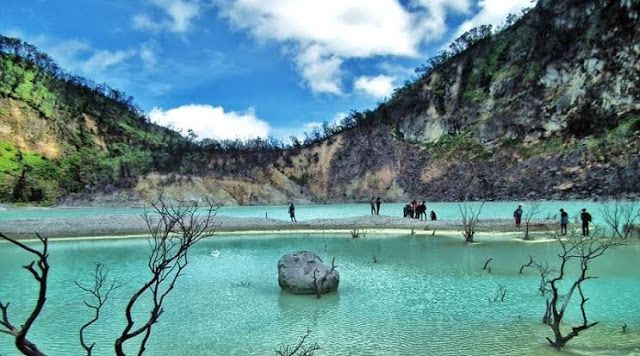
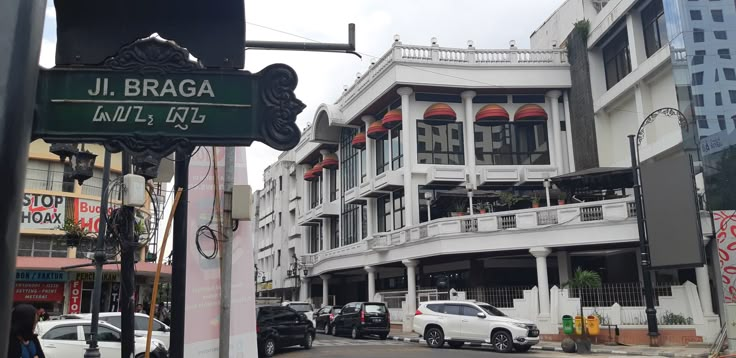
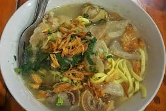

Sejarah

Kata Bandung berasal dari kata bendung atau bendungan karena terbendungnya sungai Citarum oleh lava Gunung Tangkuban Parahu yang lalu membentuk telaga. Legenda yang diceritakan oleh orang-orang tua di Bandung mengatakan bahwa nama Bandung diambil dari sebuah kendaraan air yang terdiri dari dua perahu yang diikat berdampingan yang disebut perahu bandung yang digunakan oleh Bupati Bandung, R.A. Wiranatakusumah II, untuk melayari Ci Tarum dalam mencari tempat kedudukan kabupaten yang baru untuk menggantikan ibu kota yang lama di Dayeuhkolot.
Berdasarkan filosofi Sunda, kata Bandung juga berasal dari kalimat Nga-Bandung-an Banda Indung, yang merupakan kalimat sakral dan luhur karena mengandung nilai ajaran Sunda. Nga-Bandung-an artinya menyaksikan atau bersaksi. Banda adalah segala sesuatu yang berada di alam hidup yaitu di bumi dan atmosfer, baik makhluk hidup maupun benda mati. Sinonim dari banda adalah harta. Indung berarti Ibu atau Bumi, disebut juga sebagai Ibu Pertiwi tempat Banda berada.
Geografi

Kota Bandung dikelilingi oleh pegunungan, sehingga bentuk morfologi wilayahnya bagaikan sebuah mangkok raksasa, secara geografis kota ini terletak di tengah-tengah provinsi Jawa Barat, serta berada pada ketinggian ±768 m di atas permukaan laut, dengan titik tertinggi di berada di sebelah utara dengan ketinggian 1.050 meter di atas permukaan laut dan sebelah selatan merupakan kawasan rendah dengan ketinggian 675 meter di atas permukaan laut.
Kota Bandung dialiri dua sungai utama, yaitu Sungai Cikapundung dan Sungai Citarum beserta anak-anak sungainya yang pada umumnya mengalir ke arah selatan dan bertemu di Sungai Citarum. Dengan kondisi yang demikian, Bandung selatan sangat rentan terhadap masalah banjir terutama pada musim hujan.
Wisata
Sejak dibukanya Jalan Tol Cipularang, kota Bandung telah menjadi tujuan utama dalam menikmati liburan akhir pekan terutama dari masyarakat yang berasal dari Jakarta sekitarnya. Selain menjadi kota wisata belanja, kota Bandung juga dikenal dengan sejumlah besar bangunan lama berarsitektur peninggalan Belanda.
Kawah Putih Ciwidey

Terletak di selatan Bandung, Kawah Putih adalah danau kawah vulkanik dengan air berwarna putih kehijauan yang memikat. Suasana mistis dan pemandangan dramatis membuatnya cocok untuk fotografi dan refleksi diri.
Braga: Nuansa Kota Tua dan Seni

Jalan Braga dikenal sebagai ikon kota tua Bandung. Dengan deretan bangunan kolonial, galeri seni, kafe vintage, dan mural jalanan, kawasan ini menyajikan atmosfer klasik dan artistik yang menawan.
Kuliner
Bandung tak hanya memikat dengan udara sejuk dan pemandangan indah, tetapi juga dengan ragam kuliner khas yang menggugah selera. Kota Kembang ini dikenal sebagai salah satu pusat inovasi kuliner di Indonesia, tempat di mana rasa tradisional bertemu kreasi modern yang unik.
Batagor dan Siomay
Tak lengkap ke Bandung tanpa mencicipi batagor (bakso tahu goreng) dan siomay. Makanan ini disajikan dengan bumbu kacang gurih yang kental dan perasan jeruk limau segar.
Mie Kocok

Mie kocok adalah sajian mie dengan kuah kaldu sapi, kikil, dan tauge. Rasanya gurih dan hangat, cocok disantap di tengah udara Bandung yang sejuk. Beberapa tempat seperti Mie Kocok Mang Dadeng sudah terkenal sejak lama.


5 Komentar
Budi Santoso
Braga selalu jadi tempat favoritku buat nongkrong dan foto-foto. Artikel ini ngingetin kalau Bandung itu punya semuanya, alam, budaya, dan hiburan.
Siti Rahayu
Mie kocok favorit saya banget! Dulu waktu kuliah di Bandung, hampir tiap minggu pasti makan itu. Artikel ini bikin nostalgia.